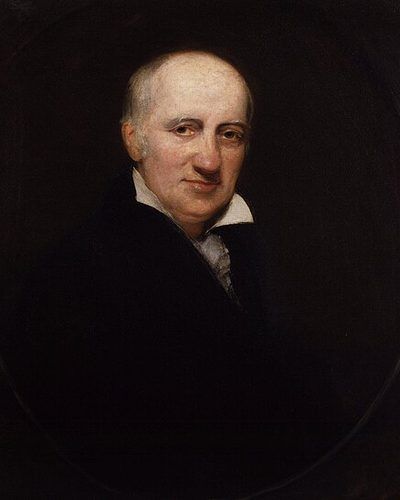

Ideologies / Anarchist
What is Philosophical Anarchism?
Philosophical Anarchism is a political ideology in the Anarchist family. Godwin holds that human beings can improve without limit through reason, and that each person must act on private judgment and not on command. Government, which arose from injustice, now keeps war, despotism and inequality in place and holds that progress back. He expects political institutions to dissolve gradually as opinion becomes more rational, leaving small communities that settle matters by discussion. Change is to come through enquiry and argument, and he rejects violent revolution.
Government will wither as reason grows.
Defined from: William Godwin, An Enquiry Concerning Political Justice (1793)
See how close you are to Philosophical Anarchism Dare a friend to answer as one


Where Philosophical Anarchism stands on 13 axes
Each axis runs from 0 to 100. A score of 50 is the middle. On a classic compass it sits in the Libertarian Right quadrant.
| Axis | Position | Score | In words |
|---|---|---|---|
| EconomyMarket to Planned | 40 | Leans Market | |
| OwnershipPrivate to Collective | 65 | Leans Collective | |
| RightsLiberty to Security | 0 | Very strongly Liberty | |
| GovernmentDemocracy to Autocracy | 5 | Very strongly Democracy | |
| StructureDecentralised to Centralised | 0 | Very strongly Decentralised | |
| NationInternationalist to Nationalist | 0 | Very strongly Internationalist | |
| ImmigrationMulticulturalist to Assimilationist | 25 | Strongly Multiculturalist | |
| ValuesProgressive to Traditional | 10 | Very strongly Progressive | |
| TechnologyAccelerationist to Precautionary | 20 | Strongly Accelerationist | |
| EnvironmentIndustrialist to Environmentalist | 45 | Balanced | |
| ReligionSecular to Religious | 10 | Very strongly Secular | |
| MilitaryPacifist to Militarist | 5 | Very strongly Pacifist | |
| TradeFree Trade to Protectionist | 25 | Strongly Free Trade |
Ideologies closest to Philosophical Anarchism
- Free Software Movement92% alike
- Pirate Politics87% alike
- Egoist Anarchism83% alike
- Utopian Socialism83% alike
- Left Libertarianism82% alike
Its opposite on this map is Juche, at 11%.
Parties near Philosophical Anarchism
- Students for a Democratic SocietyUnited States. The Port Huron Statement (1962)82% alike
- International Workers' AssociationGermany. The Principles of Revolutionary Syndicalism (1922)82% alike
- People's Party of ThailandThailand. Blueprint to Transform Thailand (2026)80% alike
- Anti Authoritarian InternationalSwitzerland. Resolutions of the Saint Imier Congress (1872)79% alike
Common questions
What is Philosophical Anarchism?
Philosophical Anarchism is a political ideology in the Anarchist family. Godwin holds that human beings can improve without limit through reason, and that each person must act on private judgment and not on command. Government, which arose from injustice, now keeps war, despotism and inequality in place and holds that progress back. He expects political institutions to dissolve gradually as opinion becomes more rational, leaving small communities that settle matters by discussion. Change is to come through enquiry and argument, and he rejects violent revolution.
What does Philosophical Anarchism believe?
In one line: Government will wither as reason grows. Its strongest positions are Liberty, Decentralised, Internationalist. Godwin holds that human beings can improve without limit through reason, and that each person must act on private judgment and not on command. Government, which arose from injustice, now keeps war, despotism and inequality in place and holds that progress back. He expects political institutions to dissolve gradually as opinion becomes more rational, leaving small communities that settle matters by discussion. Change is to come through enquiry and argument, and he rejects violent revolution.
Who founded Philosophical Anarchism?
Philosophical Anarchism is defined here from An Enquiry Concerning Political Justice (1793) by William Godwin. The thinker most tied to it is William Godwin (1756 to 1836).
Is Philosophical Anarchism left wing or right wing?
On a classic two axis compass Philosophical Anarchism falls in the Libertarian Right quadrant, which means the economic centre and the libertarian side. Left and right hide a lot, though, which is why EthosScales scores it on thirteen separate axes.
How is Philosophical Anarchism different from Free Software Movement?
They are close: 92% alike. The biggest gaps are on Government, where Philosophical Anarchism scores 5 and Free Software Movement scores 15, and Structure, where Philosophical Anarchism scores 0 and Free Software Movement scores 10. On each axis, 0 is one end and 100 is the other.
Think this is wrong? Suggest a correction. The scores are editorial estimates.